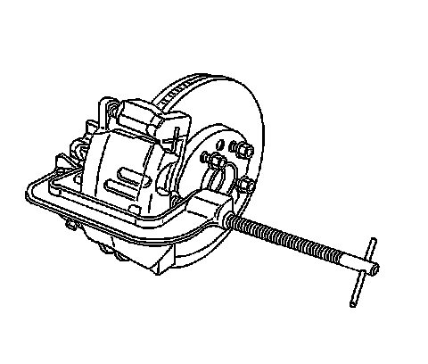
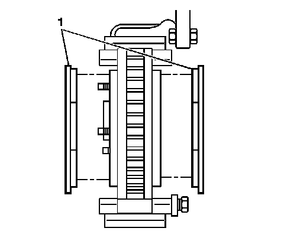
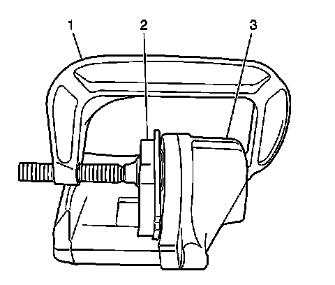

Front Disc Brake Pads Replacement
Front Disc Brake Pads Replacement
Caution: Refer to Brake Dust Caution (Brake Dust Caution) .
Removal Procedure
1. Inspect the fluid level in the brake master cylinder reservoir.
2. If the brake fluid level is midway between the maximum-full point and the minimum allowable level, no brake fluid needs to be removed from the reservoir before proceeding.
3. If the brake fluid level is higher than midway between the maximum-full point and the minimum allowable level, remove brake fluid to the midway point before proceeding.
4. Raise and suitably support the vehicle. Refer to Lifting and Jacking the Vehicle (Service and Repair) .
5. Remove the tire and wheel assembly. Refer to Tire and Wheel Removal and Installation (Service and Repair) .

6. Install large C-clamp over the body of the brake caliper with the C-clamp ends against the rear of the caliper body and against the outboard brake pad.
7. Tighten the C-clamp evenly until the caliper pistons are compressed into the caliper bores enough to allow the caliper to slide past the brake rotor.
8. Remove the C-clamp from the caliper.

9. To loosen the brake caliper lower pin bolt, hold the brake caliper guide pin with a wrench.
10. Remove the brake caliper pin bolt.
Notice: Support the brake caliper with heavy mechanic wire, or equivalent, whenever it is separated from its mount and the hydraulic flexible brake hose is still connected. Failure to support the caliper in this manner will cause the flexible brake hose to bear the weight of the caliper, which may cause damage to the brake hose and in turn may cause a brake fluid leak.
11. Pivot the brake caliper body (1) upward and secure the caliper out of the way with heavy mechanic's wire or equivalent. Ensure that there is no tension on the hydraulic brake flexible hose. Do NOT disconnect the hydraulic brake flexible hose from the caliper.

12. Remove the brake pads (1) from the caliper bracket.
13. Remove and inspect the brake pad retainers from the caliper bracket.
Installation Procedure

Important:
* Ensure that the caliper guide pin boots (2) are fully seated to the caliper guide pin retaining seat (3) of the caliper pin.
* Ensure that the caliper guide pin boots (2) are fully seated to the caliper boot seal retaining seat (1) of the brake caliper mounting bracket.
1. Inspect the brake caliper guide pin bolts. If damaged or corroded replace the brake caliper guide bolts.
2. Inspect the brake caliper guide pins. If damaged or corroded, replace the brake caliper guide pin. Do not attempt to clean away any corrosion. Refer to Front Disc Brake Hardware Replacement (Front Disc Brake Hardware Replacement) .
3. Inspect the brake caliper guide pin boots for cuts, tears, or deterioration. If damaged, replace the brake caliper guide pin boots. Refer to Front Disc Brake Hardware Replacement (Front Disc Brake Hardware Replacement) .
4. Carefully pull outward on the caliper guide pin (3) to ensure that the caliper guide pin retaining seat is fully seated to the caliper guide pin boot (2).
5. Inspect the brake caliper piston boot for deterioration, replace if damaged. Refer to Front Brake Caliper Overhaul (Front Brake Caliper Overhaul) .

6. Install a large C-clamp (1) over the body of the brake caliper (3), with the C-clamp ends against the rear of the caliper body and against an old inboard brake pad (2) or a wood block installed against the caliper pistons.
7. Tighten the C-clamp (1) evenly until the caliper pistons are compressed completely into the caliper bores.
8. Remove the C-clamp and the old brake pad or wood block from the caliper.
9. Install the brake pad retainers to the caliper bracket.
10. Install the brake pads (1) to the caliper bracket.
11. Pivot the brake caliper (1) downward, over the brake pads and into the caliper bracket.
Important: If reusing the lower caliper pin bolt, the threads of the lower caliper pin bolt and the threads of the caliper bracket mounting holes must be free of residue and debris prior to application of threadlocker in order to ensure proper adhesion and fastener retention.
12. If reusing the caliper pin bolts, prepare the bolt and the threaded hole for assembly:
* Thoroughly clean the residue from the bolt threads by using denatured alcohol or equivalent and allow to dry.
* Thoroughly clean the residue from the threaded holes by using denatured alcohol or equivalent and allow to dry.
13. Apply threadlocker GM P/N 12345493 (Canadian P/N 10953488), or equivalent to 2/3 of the threaded length of the lower caliper pin bolt. Ensure that there are no gaps in the threadlocker along the length of the filled area of the bolt.
14. Allow the threadlocker to cure approximately ten minutes before installation.
15. Apply a thin coat of Niglube(R) GM P/N 18046532 grease or equivalent, to the front brake caliper guide pin.
Notice: Refer to Fastener Notice (Fastener Notice) .
16. Install the lower brake caliper pin bolt.
Hold the lower brake caliper guide pin with a wrench and tighten the lower brake caliper pin bolt to 34 N.m (25 lb ft).
17. Install the tire and wheel assembly. Refer to Tire and Wheel Removal and Installation (Service and Repair) .
18. Lower the vehicle.
19. With the engine OFF, gradually apply the brake pedal to approximately 2/3 of its travel distance.
20. Slowly release the brake pedal.
21. Wait 15 seconds, then repeat steps 15 and 16 until a firm brake pedal apply is obtained. This will properly seat the brake caliper pistons and brake pads.
22. Fill the brake master cylinder reservoir to the proper level. Refer to Master Cylinder Reservoir Filling (Master Cylinder Reservoir Filling) .
23. Burnish the pads and rotors. Refer to Brake Pad and Rotor Burnishing (Brake Pad and Rotor Burnishing) .